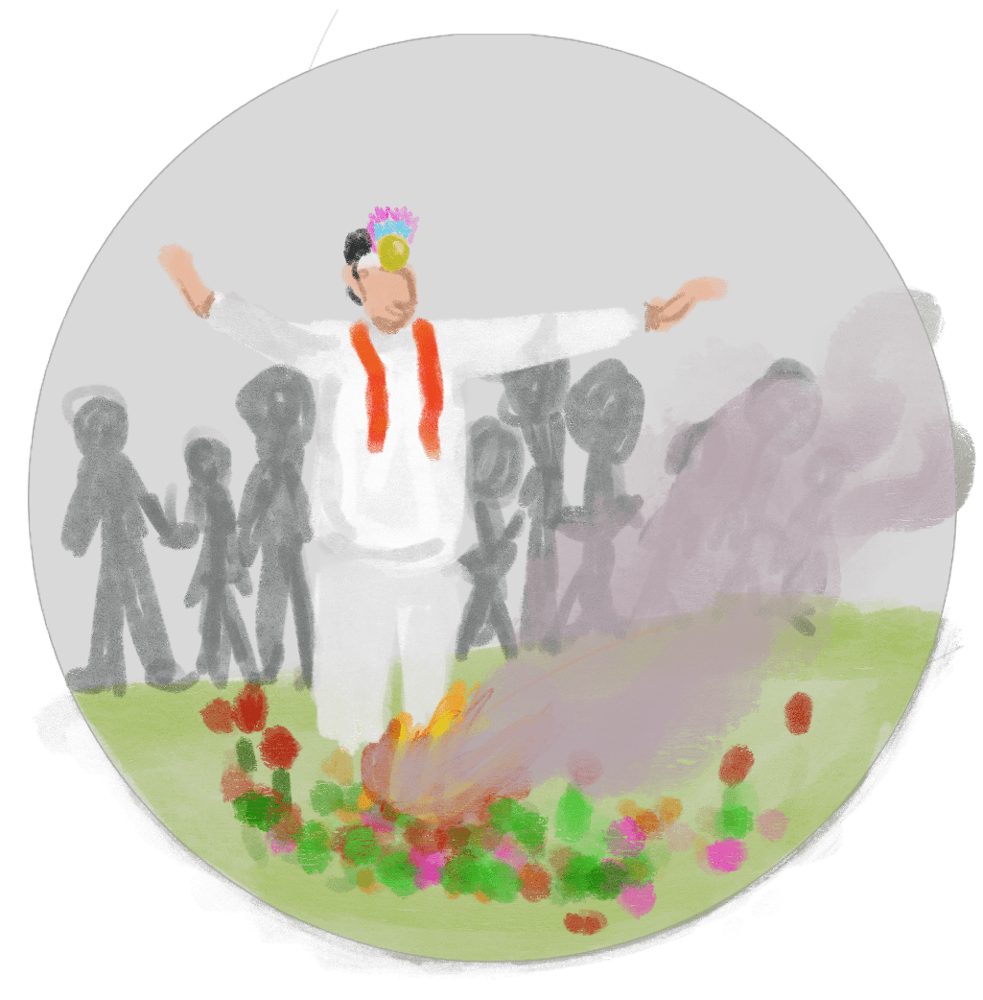
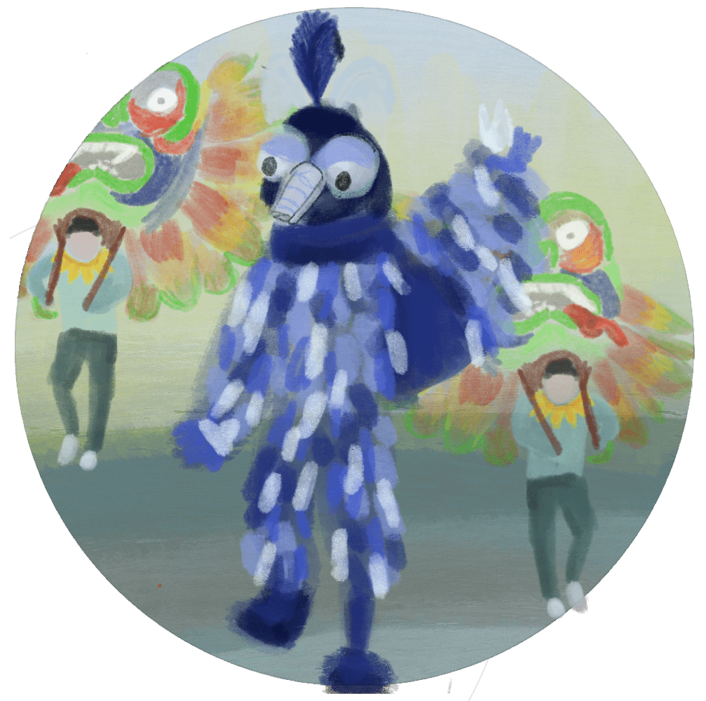

Ecuador se compone de veinticuatro provincias, una de ellas es Bolívar, la que contiene la renombrada ciudad de Guaranda; ésta se estima que recibe aproximadamente 200.000 turistas entre los feriados que acompañan al festival. Los coloridos desfiles y conciertos son los atractivos para los visitantes que colaboran con la activación de la economía local.
Historia
-
El orígen
El origen del Carnaval se crea a través de mitos y realidades, remontando a la temporada de los Mitimaes (conjunto de indígenas incas del Perú). En aquella época, se llevó a cabo la unión matrimonial de una joven pareja realizada por el Jefe Huaranga, quien también le ordenó a la naturaleza que les compusiera una canción.
-

El Dios Taita
El Gran Dios Taita (entre español y kichwa significa “Gran Padre”) junto a la Madre Naturaleza les compusieron una canción con elementos de la tierra, llena de sonidos de aves y agua. De este modo, la celebración creada por el Taita es un tiempo de disfrute para todos sirviendo como una vía de escape de la vida rutinaria; tres días de pura celebración, música, bailes y comidas tradicionales caracterizan al famoso Carnaval de Guaranda.
-

La Cuaresma
Los carnavales se conocen ancestralmente por la celebración de algún hito o personaje histórico. Aunque no hay datos concretos de cuándo se realizó el primer carnaval, se cree que sucedió tras la llegada de los conquistadores y se realiza tres días previo a la cuaresma católica, donde se prevé la abstinencia y escasez.
-

Anticipación
El carnaval ha sido una de las fiestas más arraigadas del calendario; en pueblos de Bolívar se ve al festival como una fiesta culta con bailes y versos cantados. La preparación anticipada muestra las ansias del pueblo por comenzar la gran celebración a la mezcla de cultura y religión. Además, se destaca que año tras año, el carnaval nace, se intensifica y muere para volver a nacer; representando el mito del eterno retorno.
Festividades
EL CARNAVAL
Desfilan coloridas comparsas de diversas comunidades campesinas e invitados de otras provincias. Participan los carros alegóricos, bandas de pueblo, grupos folclóricos, escuelas, la Reina de Guaranda y, por supuesto, el Taita. Es aquí donde se juega con serpentinas, talcos, agua y flores, además de presenciar los bailes públicos y los elementos que forman parte de la cultura carnavalesca.
CELEBRACIÓN AL ARTE
Los participantes del carnaval exponen su arte manual, se presentan las bandas musicales oriundas, se celebra la cultura junto a los intercambios artísticos que los turistas locales y foráneos están destinados a entonar. La atracción por parte de los turistas nacionales e internacionales ayuda a la recaudación de fondos, donde según informó el alcalde en 2019, se recaudan cerca de 3 millones de dólares anualmente.
FERIA GASTRONÓMICA
La comida se celebra, ofreciendo platos tradicionales, ollas comunes y bebidas típicas (con y sin alcohol). Todas las casas abren sus puertas para obsequiar platos preparados con los elementos clásicos como ave, maíz, tamales, motes, huevos, entre otros. Esto va acompañado de una vestimenta especial para trasladar la celebración a los patios internos de las casas y así, recibir a los comensales.
Tradiciones
El Carnaval es muy completo y eso lo hace una de las fiestas mayores del Ecuador, presentando así múltiples características que fomentan la unión familiar y social, además de representar la unión entre dos etnias de dos continentes; es una mezcla de festividades de la religión Católica y las tradiciones andinas incas.
COMIDA
Abunda la presencia del maíz en todas sus formas, al igual que el ceviche, el chancho, el mote y la papa en una gran variedad de texturas. Se llenan las calles guarandeñas y patios de las casas con comidas tradicionales, caseras y abundantes de sabor.
MÚSICA Y DANZAS
Es una fiesta animada por comparsas, pregones, contrapuntos y bailes públicos que forman parte de la cultura carnavalesca. Se presentan incontables coreografías ensayadas por semanas, al igual que la infaltable música; donde predomina la melodía andina y también música contemporánea.
ELEMENTOS
Se juega con serpentinas, lociones, flores. Esta mixtura de elementos, junto al talco, los polvos y el agua principian a verificar una original transformación en los rostros de los participantes. Cada detalle: el agua, el talco y los perfumes, las serpentinas y el dulce de sambo, son regalos para el que viene de visita, para el invitado, para el ser querido.
RELIGIÓN
Por la calendarización, el Carnaval está ligado a la Iglesia Católica, aunque posee una mezcla entre aquella y la tradición indígena: el mito del eterno retorno, es cumplir con el ciclo vital, que año tras año se lo vuelve a vivir; el tiempo que precede al recogimiento espiritual.
Personajes